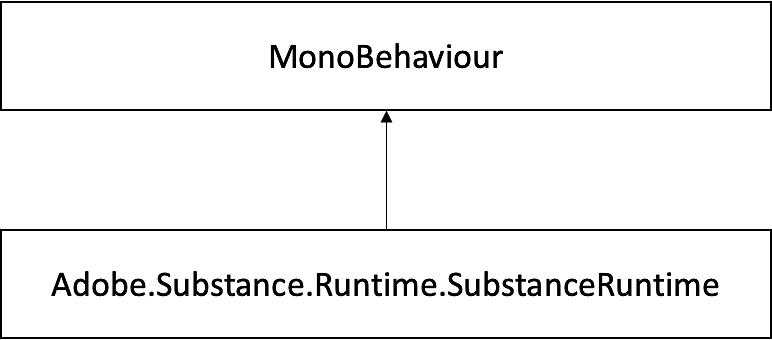

Singleton class that handles Substance engine initialization and it is used to get native handlers to substance instances.
Inheritance diagram for Adobe.Substance.Runtime.SubstanceRuntime:

• SubstanceNativeGraph InitializeInstance (SubstanceGraphSO substanceInstance)
Creates a Substance SDK handle for a given SubstanceGraphSO.
• static SubstanceRuntime Instance [get]
Singleton instance.
Singleton class that handles Substance engine initialization and it is used to get native handlers to substance instances.
SubstanceNativeGraph Adobe.Substance.Runtime.SubstanceRuntime.InitializeInstance ( SubstanceGraphSO substanceInstance ) [inline]
Creates a Substance SDK handle for a given SubstanceGraphSO.
Parameters
| substanceInstance | Target SubstanceGraphSO |
Returns
Handle that communicates with the Substance SDK
SubstanceRuntime Adobe.Substance.Runtime.SubstanceRuntime.Instance [static], [get]
Singleton instance.
Global singleton instance.
The NativeGraph.InRenderWork is intended only for internal use only to communicate with the Substance Engine, and should not be used for custom workflows.